O QUE É O NODEMON?
Nodemon é um utilitário que serve para auxiliar no desenvolvimento de uma aplicação. Ele monitora mudanças no código-fonte. Sua principal vantagem é automaticamente reiniciar o servidor.
COMO INSTALAR O NODEMON NO MEU PROJETO?
No terminal do VS, digite o comando “npm install nodemon –save-dev” (o “—save-dev” é para no package.json ele for instalado como dependência de desenvolvimento e não uma global, como o express). Ou digite “npm install -g nodemon” para instalar o instalar como global;
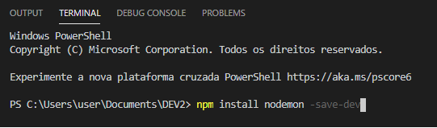
Ou para instalar o nodemon como global
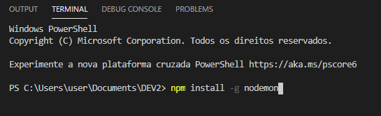
RODAR UMA APLICAÇÃO COM O NODEMON
No terminal do VS, digite:
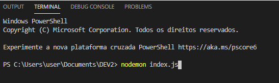
OBSERVAÇÃO: Caso tenha dado erro ao rodar o nodemon, abra o arquivo package.json e crie a propriedade destacada na imagem abaixo para rodar o nodemon diretamente pelo npm;
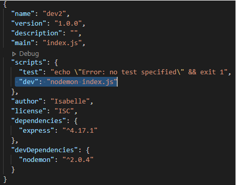
Para rodar a aplicação nodemon, digite no terminal “npm run dev”
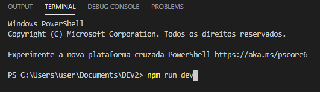
COMO ORGANIZAR MELHOR SUA APLICAÇÃO?
Para melhor aproveitamento do projeto, é necessário que haja um boa organização do código. Para o projeto é necessário criar um repositório único para que ele realize o commit no GitHub.
Para dar início, é necessário criar uma pasta com o nome “server” que é a pasta do servidor para realização do desenvolvimento, em seguida devemos adicionar a ela nosso arquivo “index.js”, o mesmo será responsável por subir nosso servidor.
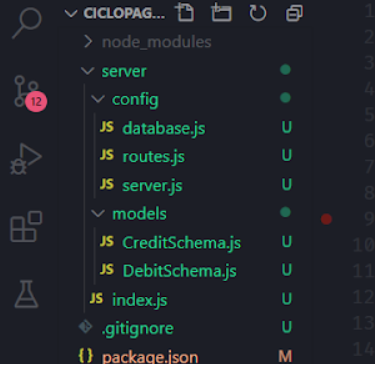
Ao realizar a transferência do arquivo index.js para a pasta server, nosso sistema acusa um erro por não encontrar no local, para realizar o ajuste deve-se ir no arquivo package.jason e inserir:
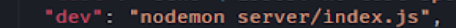
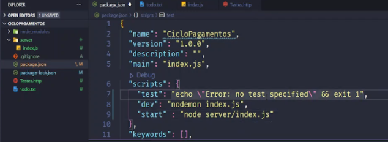
Para melhor visibilidade e aproveitamento da aplicação, separamos os arquivos do index.js em partes, ou seja separamos os que rodam a aplicação e separamos em arquivos de configuração. Dentro da nossa pasta server criamos uma pasta chamada config, está pasta será responsável por ter a configuração do servidor, banco de dados e de rotas.
Dentro desta pasta criamos um arquivo chamado server.js o mesmo representará a configuração e o que será necessário para o servidor.
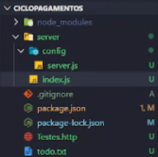
Em seguida, incluiremos em nosso arquivo index.js o comando:
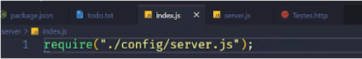
Dando sequência nas configurações, será necessário configurar as rotas e separar um novo arquivo. Dentro da pasta config, iremos criar um arquivo chamado routes.js, e é neste arquivo que definidos as rotas usadas na aplicação.
No arquivo routes.js incluiremos os seguintes comandos:
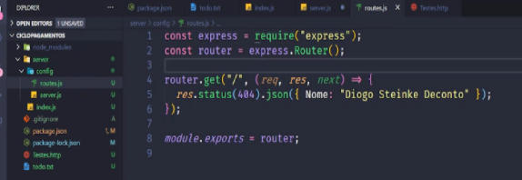
E atualizaremos o arquivo server.js para que possamos ter acesso aos comandos definidos no arquivo routes.js.
Para toda e qualquer requisição recebida pela aplicação a mesma deverá configurar o arquivo de rotas conforme abaixo:
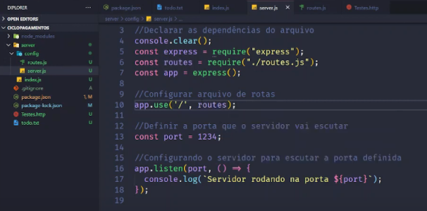
Cada tipo de requisição na aplicação pode ser apontado em rotas diferentes, desta maneira podemos configurar o arquivo de rota da seguinte forma:
Quando for na raiz apontamos para um arquivo:
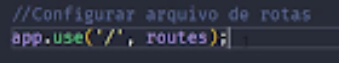
Quando for a exemplo uma requisição de produtos apontamentos a requisição para routesProcucts: